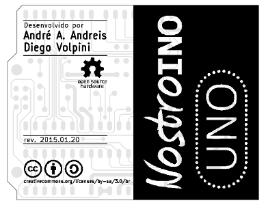

Baseado no Arduino UNO é 100% compatível com esta plataforma.
Criado por André Augusto Andreis (andreis.andre@gmail.com) e Diego Volpini com o objetivo de disponibilizar uma alternativa de menor custo e de fácil montagem.
Nostroino está sendo distribuído segundo os critérios da Open Source Hardware Association e de acordo com os atributos BY-SA da Creative Commons.
A documentação completa pode ser encontrada em https://github.com/nostroino/UNO